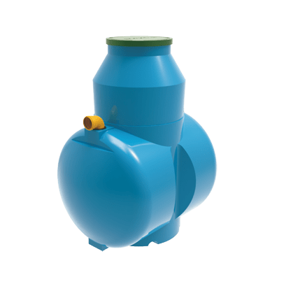
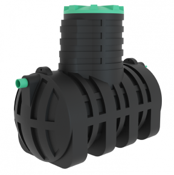
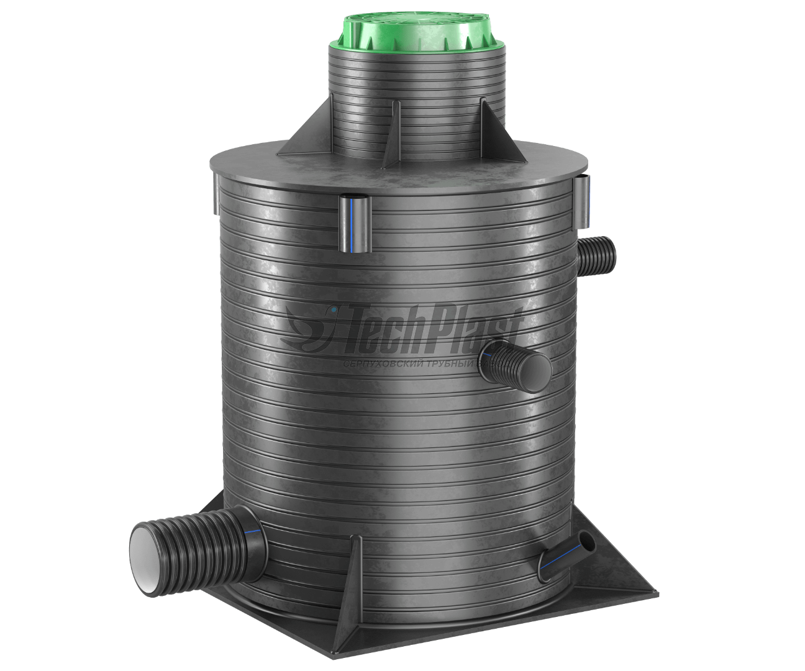

Септик Дочиста Classic 5
До шести человек 63 000₽
До шести человек 63 000₽

Септик Эко-Гранд 3
До пяти человек 84 000₽
До пяти человек 84 000₽

Септик Юнилос Астра 5
До пяти человек 75 000₽
До пяти человек 75 000₽